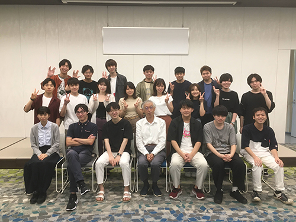

-Profile-

名前：小澤弘太郎
生年月日:2002年1月18日
-Self-PR-

強みは興味を持ったことに対し、主体的に実行する行動力と成長意欲です。webサイト制作に興味があり、HTML、CSS、JavaScriptでプログラミング、adobeでデザインを学習しています。独学で勉強するためにsnsを活用しました。プロのweb製作者にアドバイスを受けたり、同じ文系の学生と直接会ってモチベーションを高め合いました。様々なwebサービスを利用し、半年後には簡単なポートフォリオを作成することができました。今は、長期インターンに参加して実務経験を積むことを考えています。入社後には自ら様々な案件に挑戦し、成果を発揮できる人材になりたいです。日々のニュースにも敏感になり、常に最新の状態で仕事を行います。
-Career-

high-school

2017年4月:目白研心高等学校入学
サッカー部所属
東京都Bブロックベスト16
高校初の東京都ベスト16を達成し、3年の11月に引退しました。また、同時に大学合格のための受験勉強も進めていました。チーム全体で80人ほどの部員がおり、自分はチーム内では絶対的なレギュラーではなくいわゆる控えの選手でした。それでも落ち込むことなく周りと差をつけるために弱点を見つけ、毎朝1時間早く学校に行ってコーチと一緒にトレーニングしたり、通常の練習も全力で取り組み必死にアピールしました。これが実を結び、公式戦に出場し得点を決めることができました。当時の喜びは今でも覚えています。受験のために練習後には、そのまま学校に最後まで残り勉強したり、引退後は朝にみんなより1時間早く学校に来て勉強したり、隙間時間を見つけ時間をできるだけ無駄にしないように計画して勉強することを考えました。引退は11月と遅くなりましたが、全力で3年間チームのみんなと努力できて本当に良かったと思っています。
university

2020年4月:専修大学商学部マーケティング学科入学
高萩ゼミ
ゼミでソフトウェアとアプリケーションを応用したシステムを作成しています。具体的に作成したシステムはExcelとPHPを使い、利用者におすすめのマイナースポーツを提案するシステムです。初めに、運動量が多いか少ないの二択の好みを選択してもらいその後、楽しさ、激しさ、選択した運動量多いか少ないか、気軽さ、費用の項目から重要度を選択してもらうことで、自動でおすすめのマイナースポーツを提示することができます。
-Works-


僕は自分で制作した作品で利益を得るという目的のもと、Web制作の勉強をしています。自分は大学の商学部の学生なので独学で勉強を始めました。まずは何もわからない状態なので、YouTubeやSNS、本で情報探索をして自分が行うべきロードマップを簡単に作成しました。まずはProgateというWeb教材でインプットの学習をしました。独学での勉強なので苦戦しましたが、基礎が一番重要だと考えていたので乗り越えられました。その後はすぐにアウトプットのためにcodestepというwebサイトの教材でデザインカンプからのコーディングの学習に移りました。インプットよりもアウトプットの方が頭に残りやすく、自分の癖にも気付けるので重要であることが分かりました。また、デザインの勉強のためにAdobeの学生プランに入会しデザインの基礎を学んでいます。そこで教材をいくつか終えた今は、自分のポートフォリオ作成に取り掛かっています。自分は商学部で勉強しているマーケティングも興味があり、これらを組み合わせたwebマーケティングの勉強もしたいと考えています。
-Hobby&Skills-

趣味は、去年の3月から始めたジムでの筋力トレーニングです。理想の体を手に入れ、自分の自信にしたかったので初めました。継続し続けるために、僕は手帳を活用しています。ジムに行った日に内容と数値を記録することで、自分の努力を可視化することができました。これにより、毎月の体つきの変化が分かるようになり、自分の自信にも繋がりました。また、筋トレをすることで日常生活が変わりました。睡眠時間を確保し、早寝早起きをすることが筋肉に良いとされているので、おのずと健康的な生活になりました。運動をするので、体力が付き生活が活性化し、勉強やアルバイトにも全力で取り組むことができています。